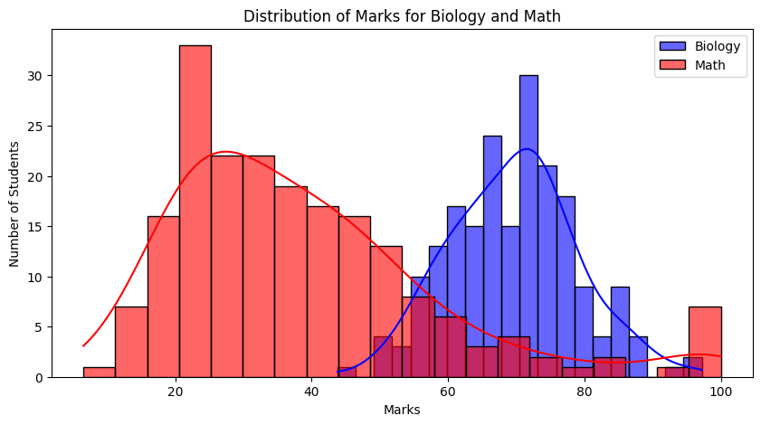

15 July 2025
One of the things I love about IISERB is the annual math club fest of Continuum. This year, one of the events was a 7-minute symposium where you could present any topic — as long as you used mathematics. I chose Shannon's kids: KL and JS divergences. It won me second prize and a sipper, now employed for iced tea on lazy afternoons.
Imagine two professors grading differently. BIO101 has Gaussian-like scores — balanced and symmetric. ECS201 or MTH202, however, reveal skewed results. It’s obvious visually — but how can we measure this difference rigorously and quantitatively? That's where information theory enters.
Here's what these distributions might look like:
Not all distributions describe reality equally well. KL divergence tells us how inefficient one distribution is in describing data generated from another. This inefficiency — in bits — is the cost of using the wrong model.
Kullback-Leibler divergence quantifies the discrepancy between two probability distributions:
\[ D_{KL}(P || Q) = \sum_x P(x) \log \frac{P(x)}{Q(x)} \]
KL divergence is zero iff \(P = Q\) almost everywhere. In this sense, it acts as a quasi-distance measure on the space of distributions.
The KL divergence is rooted in Shannon’s definition of entropy, which measures the average uncertainty (or information content) in a distribution:
\[ H(P) = - \sum_x P(x) \log P(x) \]
Cross-entropy is the average number of bits needed to encode samples from \(P\) using a coding scheme optimized for \(Q\):
\[ H(P, Q) = - \sum_x P(x) \log Q(x) \]
The KL divergence is simply the difference:
\[ D_{KL}(P || Q) = H(P, Q) - H(P) \]
This makes its interpretation in coding theory precise: how many more bits are needed, on average, because you assumed the wrong distribution?
Suppose Biology marks are normally distributed and Math marks are skewed. Then:
This tells us assuming Math is Bio is much worse than the reverse — there’s more inefficiency, more surprise.
Think of guessing a number from 1 to 8. Each binary question like “Is it > 4?” gives 1 bit of information. Since there are 8 options, you need:
\[ \log_2 8 = 3 \text{ bits} \]
Information content of an event with probability \(p\) is:
\[ I(x) = -\log_2 p(x) \]
Thus, rarer events contain more information. Shannon entropy is just the expected value of this surprise.
While powerful, KL divergence has limitations:
To address these, a more robust measure was developed.
Jensen-Shannon Divergence is a symmetrized and smoothed version of KL divergence:
\[ D_{JS}(P || Q) = \frac{1}{2} D_{KL}(P || M) + \frac{1}{2} D_{KL}(Q || M), \quad M = \frac{1}{2}(P + Q) \]
JSD can also be written using entropies:
\[ D_{JS}(P || Q) = H(M) - \frac{1}{2} H(P) - \frac{1}{2} H(Q) \]
This measures how much more uncertain the mixture \(M\) is compared to the average uncertainty of \(P\) and \(Q\).
It also has a nice interpretation: it is the mutual information between a sample and its origin label (whether it came from \(P\) or \(Q\)) — thus connecting information theory with classification.
In Latent Dirichlet Allocation (LDA), topics are distributions over words, and documents are mixtures of topics. KL divergence plays a central role:
KL divergence gave us a powerful lens for measuring divergence between beliefs and reality — but it’s not perfect. Jensen-Shannon builds on it with symmetry and robustness. Behind them all, Shannon's insight remains foundational: information is uncertainty, and math can measure it.